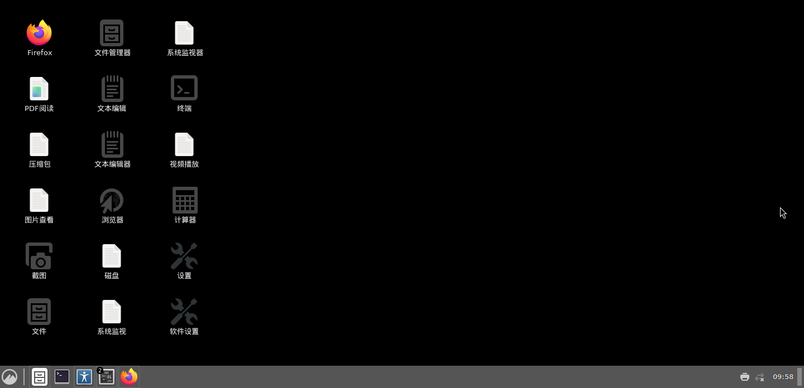
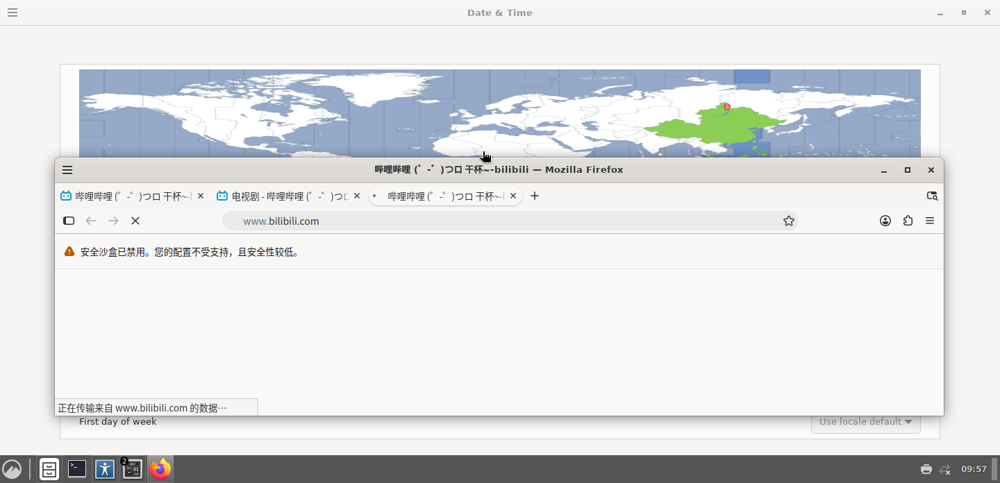
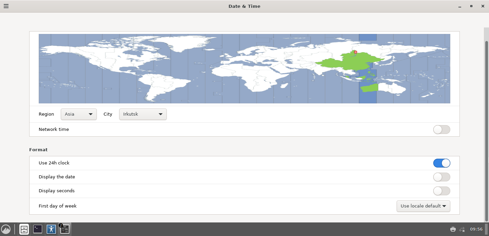

在 Android 非 root 环境里跑任何 Wayland 合成器，第一条命令就会死。 而且死法极其误导 —— 它会让你以为是路径问题、目录不存在、环境变量没设。 全都不是。
「明明存在，但它说不存在」。这不是 bug，这是 SELinux 在 bind() 那一刻把调用掐掉了，
而 glibc 的 stat() 检查被拦后返回 EACCES，
weston 把它当成「不存在」处理，于是打出了那句误导人的话。
| 尝试 | 结果 | 原因 |
|---|---|---|
XDG_RUNTIME_DIR=/sdcard/.. | ✗ EACCES | /sdcard 是 FUSE，不支持 unix socket |
XDG_RUNTIME_DIR=/data/local/tmp | ✗ EACCES | SELinux 拒 sock_file create |
XDG_RUNTIME_DIR=/dev/shm | ✗ ENOENT | Android 根本没有可写 /dev/shm |
| 翻译成抽象 socket | ✓ 成功 | 无文件标签，策略放行 |
FNV-1a 哈希把路径压成 32 位，格式化成抽象名。
服务端 bind 和客户端 connect 必须用同一个算法 —— 这是唯一容易翻车的地方，
两边差一个字节，你就是永远的 ENOENT。
文件路径 socket 落地成 sock_file 被 SELinux 拒。
翻译成抽象名 @TLWL:<fnv1a8hex>，不产生文件系统对象，策略直接放行。
Wayland 的 wl_shm 全靠它。Android 没有可写 /dev/shm。
退化到 memfd_create —— fd 语义完全一致，客户端察觉不到。
/dev/dri/renderD128 权限位 666 却打不开。伪造 DRM 节点让
EGL 走 surfaceless 路径，绕过 DRM render node 探测。
这是最硬的一堵墙，卡了整整一天。合成器起来了，但画面出不来：
根因：render/gles2/renderer.c 里，
gles2_get_render_buffer_caps() 只返回
WLR_BUFFER_CAP_DMABUF；
而 get_or_create_buffer()
压根没有 SHM 分支，直接 goto error_buffer。
但 Android 上没有 DRM render node，GLES2 渲染器拿不到 DMABUF，只有 SHM。
所以两边永远对不上。
上游 wlroots 假设「你既然用 GLES2，就一定有 DMABUF」。
在 Android 上这个假设是错的。
我们改了 90 行，给它补上 SHM 输出路径：
| 文件 | 改动 |
|---|---|
include/render/gles2.h | 结构体加 is_shm / shm_tex / shm_data / shm_stride |
render/gles2/renderer.c | 返回 DMABUF | SHM |
render/gles2/renderer.c | get_or_create_buffer() 加 shm_path: 分支（纹理 + FBO） |
render/gles2/pass.c | render_pass_submit() 加 glReadPixels + 垂直翻转 |
像素级验证：swaybg 设纯色 #1a1626，
grim 截图，逐像素比对 —— 1,002,240 个像素全部精确匹配 (26,22,38)。
不是「看起来对」，是数学上对。
| 指标 | CPU 软渲染 (llvmpipe) | GPU (zink / Turnip) | 提升 |
|---|---|---|---|
| FPS | 7.8 | 210.7 | 26.9× |
| 单帧耗时 | 127.74 ms | 4.75 ms | 26.9× |
| 算力 | 2.11 GFLOPS | 56.79 GFLOPS | 26.9× |
| 抓帧 | 5.7 fps (grim+转换) | 28.8 fps (常驻 grabber) | 4.7× |
最初用 grim 单次截图 + ppm2xwd 转换，实测：grim 102~119ms，转换 56~75ms，
合计约 175ms = 5.7 fps。桌面卡得像 PPT。
改成常驻 grabber（长连 wlr-screencopy 客户端，自己管理 buffer 复用），一次连接持续出帧。
这里踩了 4 个坑，每个都能让人查一整天：
广播来的是 0x34324241，看起来像乱码，其实是
DRM_FORMAT_ABGR8888。写死 WL_SHM_FORMAT_XRGB8888
会得到 error 1: invalid buffer format。
传 NULL 会报 error marshalling arguments (signature nio)。
必须先 bind 一个 wl_output 再把它的 id 传进去。
不能在 capture_output 之后立刻建 wl_buffer，
必须等 compositor 把 frame.buffer 事件发过来，拿到 fd 和 stride。
重定向到文件时 stderr 是全缓冲，进程被杀就什么都没了。
setvbuf(stderr, NULL, _IONBF, 0) 一行救回所有调试信息。
不是概念图，不是 mockup。手机截下来的原始帧。



另外还跑通过：Nemo 文件管理器 · GNOME Terminal · xterm · xdotool 自动化 · xrandr 调分辨率 · gsettings 改壁纸 · Muffin 窗口管理器（最小化/最大化/关闭全部可用）
| 组件 | 作用 | 在本仓库 |
|---|---|---|
src/shim/fakesock.c | SELinux 绕过（bind/connect/shm_open/DRM） | ✓ 全部源码 |
src/patch/ | wlroots SHM 输出路径（4 处改动 + 补丁包） | ✓ 全部源码 |
src/grabber/ | 常驻抓帧器 28.8 fps | ✓ 全部源码 |
src/input/tliin.c | 触控/键盘注入（XTEST，6ms 轮询） | ✓ 全部源码 |
src/android/ | TLHome 完整 Java 源码 + 已签名 APK | ✓ 全部源码 |
proof/ | 实测截图 | ✓ |
讲技术的文章最容易犯的错，是只讲成功。这里讲失败。
| 限制 | 状态 | 原因 |
|---|---|---|
| Cinnamon 本身仍是 CPU 绘制 | 未解决 | Muffin 用 cairo 软件渲染，GPU 只接管最终合成。不能说「全 GPU」 |
| Xvfb 无法用 GPU | 架构限制 | libglx → glvnd → drisw 只认 swrast/llvmpipe，zink 属硬件 DRI，drisw 根本不加载 |
| weston 无法截图 | 未解决 | weston 13 三个 shell 都没注册 authorizer，只能改源码 |
| sway 的 Xwayland 需手配 | 部分 | wlroots 需 -Dxwayland=enabled + 装 13 个 xcb dev 包 |
| 内存极度紧张 | 需管理 | 15GB 总量，微信+飞书占 1.7GB，B站视频页要 1.5GB |
| 键盘映射有偏差 | 已知 | Android keycode → X11 keycode 部分符号错位 |
| B站视频播放器 | 未验证 | 可能报「浏览器不支持 HTML5 播放器」 |
上次我犯过一个错：把「猜测」当成「结论」写进文档。
这次不会。上面每一条要么有日志，要么标了未解决。
想在 Android 上跑 Wayland 合成器 · 在做 Termux:X11 类似替代品 · 遇到「明明有权限但 bind 就是 EACCES」· 在 Android 做容器/图形栈移植
只是想在手机上跑个 Linux —— 用 Termux + proot-distro，一行命令搞定 ·
有 Root —— 直接 supolicy 加规则，不用劫持 ·
想要流畅办公 —— 买台二手笔记本